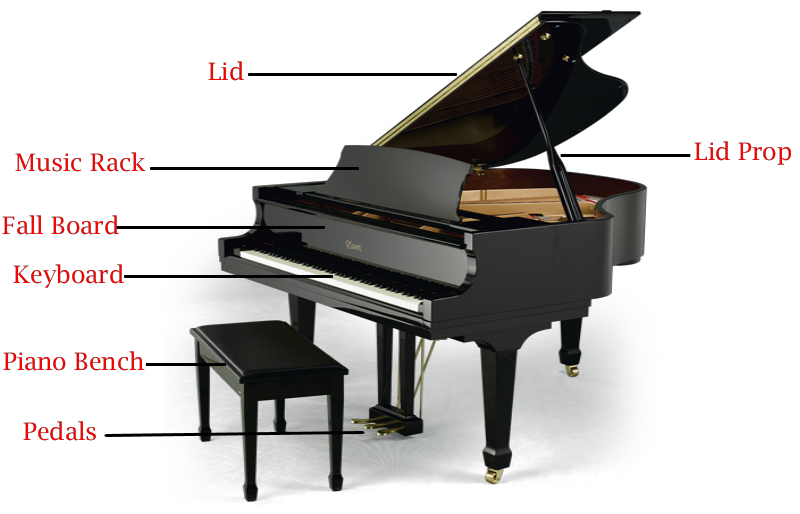
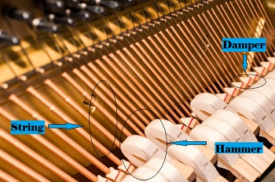

Parts of the Instrument
Did you know that there are 7500 working parts and 230 strings required in each piano
in order to produce a full range of that sound we need? That just tells us how complex and
intricate the piano's design is.
First off, a piano has a keyboard with a total of 88
keys, 52 of which are white keys and 36 of which are black keys. The keyboard is the main,
important part of the piano because it's the part of the instrument you play, by pressing the
keys to produce sound.
Secondly, every piano has its own housing, which varies because
some pianos are grand pianos and therefore have a different shape than the upright piano.
While the grand piano has a curvy, triangular shape, the upright piano is rectangular.
Third of all, a piano has a lid that completes the top of its housing. For a grand piano,
the lid is typically opened up to project the sound and make it sound more resonant. When the lid
is opened, one could see the the way the strings are arranged and set up inside the piano.
Fourth of all, every piano has pedals, generally 3 of them, and rarely 2. One of the pedals
allow the piano to sound muted, while the other pedal elongates the notes and adds a beautiful
echo to each note.
Finally, we come to the keys, hammers, and strings, which are the parts
that work together to produce the sound we make when we play the piano. Every single key on the
piano is joined to a hammer covered in felt. At the moment one presses a key, the felt-covered
hammer connected to the key strikes the string that produces a sound that corresponds to the
musical note pressed on the keyboard. The vibration of the strings as they are hit is what
produces the sound. The harder you press a key, the more the string vibrates, thus amplifying the
sound. There is also a damper placed over every string that is lifted whenever a piano key
is pressed, and is replaced on the string whenever the key is released, which allows for articulations
on the piano.